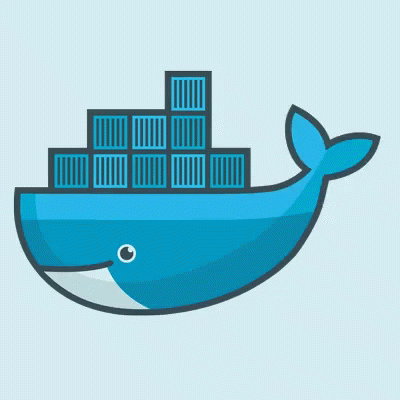

Как множество контейнеров работает вместе как единая надёжная система.
Автор: Токарев А.А.

Токарев Александр Алексеевич, ИУ3-32М, taa21u591@bmstu.ru, Вариант 3
ПЛАН ПРЕЗЕНТАЦИИ
Содержание
01Что такое распределённые системы
02Kubernetes: что это и зачем
03Архитектура и основные объекты
04Масштабирование и отказоустойчивость
05Пример из реальной жизни
06Будущее технологии и выводы
Токарев Александр Алексеевич, ИУ3-32М, taa21u591@bmstu.ru, Вариант 3
ВВЕДЕНИЕ
Что такое распределённая система?
Несколько компьютеров работают вместе и выглядят для пользователя как одно целое.
Данные и работа делятся между узлами
Узлы обмениваются информацией по сети
Если один узел упал — работают остальные
Токарев Александр Алексеевич, ИУ3-32М, taa21u591@bmstu.ru, Вариант 3
ПРОБЛЕМА
Почему нельзя управлять этим вручную?
Сбои серверов
Приложение падает — кто-то должен вручную его перезапустить
Простои
Ручное обновление занимает время, пользователи ждут
Сложно масштабировать
При росте нагрузки нужно вручную добавлять серверы
Человеческий фактор
Ошибка в ручной настройке — и всё останавливается
Токарев Александр Алексеевич, ИУ3-32М, taa21u591@bmstu.ru, Вариант 3
ЗНАКОМСТВО С ТЕХНОЛОГИЕЙ
Что такое Kubernetes?
Простыми словами — это «диспетчер», который сам управляет множеством контейнеров с приложением: запускает, следит за состоянием и перезапускает при сбое.
Kubernetes («k8s») — открытая платформа для оркестрации контейнеров, созданная в Google.
Токарев Александр Алексеевич, ИУ3-32М, taa21u591@bmstu.ru, Вариант 3
КАК ЭТО УСТРОЕНО
Архитектура кластера Kubernetes
Control Plane — «мозг» кластера
API Server — принимает команды
etcd — хранит состояние кластера
Scheduler — решает, где запустить контейнер
Controller Manager — следит, что всё работает как надо
Worker Nodes — «руки» кластера
Node 1kubelet · kube-proxy
PodPod
Node 2kubelet · kube-proxy
PodPod
Токарев Александр Алексеевич, ИУ3-32М, taa21u591@bmstu.ru, Вариант 3
КЛЮЧЕВЫЕ ПОНЯТИЯ
Основные объекты Kubernetes
Объект
Роль
Аналогия
Пример использования
Pod
Минимальная единица запуска
Квартира в доме
Контейнер с веб-сервером Nginx
Deployment
Следит за нужным числом копий Pod
Управляющая компания
Поддержать 3 копии API всегда запущенными
Service
Постоянная точка доступа к Pod'ам
Стойка ресепшн
Балансировка трафика между Pod'ами backend
Namespace
Изолированная зона внутри кластера
Отдельный этаж здания
Разделить окружения dev и production
Токарев Александр Алексеевич, ИУ3-32М, taa21u591@bmstu.ru, Вариант 3
КАК ЭТО РАБОТАЕТ
Автоматическое масштабирование
Kubernetes сам добавляет копии приложения при росте нагрузки — и убирает лишние, когда нагрузка спадает.
Больше пользователей → больше копий Pod
Меньше нагрузка → лишние копии удаляются
Низкая нагрузка
Средняя нагрузка
Высокая нагрузка
Токарев Александр Алексеевич, ИУ3-32М, taa21u591@bmstu.ru, Вариант 3
КАК ЭТО РАБОТАЕТ
Самовосстановление системы
Если контейнер или узел выходит из строя, Kubernetes не ждёт человека — он сам запускает замену на исправном узле.
До сбоя
Узел 1
Узел 2
Узел с Pod вышел из строя
После восстановления
Узел 1
Узел 2
Новый Pod запущен на другом узле
Токарев Александр Алексеевич, ИУ3-32М, taa21u591@bmstu.ru, Вариант 3
КАК ЭТО РАБОТАЕТ
Как сервисы находят друг друга
Pod'ы могут исчезать и появляться на новых местах — поэтому они общаются не напрямую, а через Service, у которого всегда постоянный адрес.
Frontend Pod'ы
Service
Backend Pod'ы
Адрес Service не меняется, даже когда сами Pod'ы обновляются
Токарев Александр Алексеевич, ИУ3-32М, taa21u591@bmstu.ru, Вариант 3
НА ПРАКТИКЕ
Пример: интернет-магазин на Kubernetes
Каждая часть приложения работает в своих Pod'ах и масштабируется отдельно — весь набор объединяет один кластер.
КЛАСТЕР KUBERNETES
Frontend
интерфейс магазина
API / Backend
обработка заказов
База данных
хранит товары и заказы
Токарев Александр Алексеевич, ИУ3-32М, taa21u591@bmstu.ru, Вариант 3
ИТОГИ ПРИМЕНЕНИЯ
Преимущества использования Kubernetes
Надёжность
Система сама восстанавливается после сбоев
Масштабируемость
Легко выдерживает рост нагрузки
Автоматизация
Меньше ручной работы для инженеров
Гибкость
Работает одинаково в любом облаке
Токарев Александр Алексеевич, ИУ3-32М, taa21u591@bmstu.ru, Вариант 3
ВЗГЛЯД ВПЕРЁД
Будущее технологии и выводы
Куда движется технология
Serverless-подходKubernetes без ручной настройки серверов
Периферийные вычисленияКластеры прямо на устройствах IoT
Задачи ИИ и MLОркестрация обучения моделей на GPU
Главные выводы
Kubernetes снимает с людей рутину по управлению серверами
Система устойчива к сбоям и растёт вместе с нагрузкой
Это стандарт для современных распределённых приложений
Токарев Александр Алексеевич, ИУ3-32М, taa21u591@bmstu.ru, Вариант 3
Спасибо за внимание!
Готов ответить на вопросы
Токарев А.А. · ИУ3-32М · МГТУ им. Н.Э. Баумана
Токарев Александр Алексеевич, ИУ3-32М, taa21u591@bmstu.ru, Вариант 3